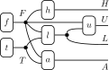

import torch
from torch.distributions import Bernoulli
def gen_F(N):
return Bernoulli(0.00088).sample((N,))
def gen_T(N):
return Bernoulli(0.11).sample((N,))Exercise 1: Credit card fraud detection
Introduction
In this exercise, you will build a generative model for credit card fraud detection and use rejection sampling to infer the probability of fraud given observed evidence.
Every day, millions of transactions are processed. The vast majority are legitimate, but a tiny fraction are fraudulent. We cannot directly observe the intent behind a transaction (the hidden state), but we can observe signals that are correlated with fraud — such as unusual locations, large amounts, or odd timing. These signals are noisy: a legitimate user might shop at 3 AM, and a fraudster might buy groceries. Your task is to formalize these intuitions into a generative model, represent its structure as a string diagram, and use rejection sampling to compute posterior probabilities.
The Variables
We model a single transaction using the following binary random variables. Each variable takes the value 1 (true) or 0 (false).
- Fraud (\(F\)): The hidden state. Is this transaction fraudulent?
- Travel (\(T\)): Is the cardholder currently traveling abroad?
- Location Anomaly (\(L\)): Is the transaction location unusual for this user?
- High-Risk Merchant (\(H\)): Is the merchant in a category preferred by fraudsters (e.g., jewelry, electronics)?
- Unusual Time (\(U\)): Did the transaction occur at an unusual time for this user?
- Large Amount (\(A\)): Is the purchase amount significantly higher than the user’s average?
Note that \(F\) and \(T\) are hidden states — they describe the underlying situation. The remaining variables (\(L\), \(H\), \(U\), \(A\)) are observable signals that may depend on the hidden states.
Tasks
1. Structure and String Diagrams
Think about how credit card fraud works causally. Which variables influence which? For instance, whether a transaction is fraudulent might affect the likelihood of a large amount, but not whether the cardholder is traveling.
Task: Draw a string diagram for this system using the notation from the course notes: boxes for processes and wires for variables. Wires carry information from left to right. The outputs of the diagram should be the observable variables \(L\), \(H\), \(U\), and \(A\). No box should appear to the left of its inputs.
Hint: Start by identifying which variables are generated independently (these are generators with no input wires) and which causally depend on others. For the dependent variables, think about what directly influences them. Remember that one variables might depend on several others. Draw the boxes separately first, then decide how to arrange them on the page to respect the left-to-right flow.
TipSolution
Here is one reasonable string diagram for this system (other choices are possible):

We have chosen to model \(F\) and \(T\) as independent generators, since whether a transaction is fraudulent does not directly cause the cardholder to be traveling, and vice versa. The observable \(H\) depends only on \(F\), since traveling would not cause me to shop at a high-risk merchant. The observables \(L\) and \(A\) depend on both \(F\) and \(T\), since both fraud and travel can cause unusual locations and amounts. We have chosen \(U\) to depend on \(F\) and \(L\) since fraud might take place at unusual times, while being in a different time-zone will also cause me to shop at odd hours. Importantly, \(U\) only depends on \(T\) via \(L\). In other words, I will only show at odd hours while traveling if I’m in a different time-zone.
2. Implement the Boxes
Each box in your string diagram represents a process that randomly produces an output given its inputs. Your next task is to implement each box as a Python function. There are two ways to approach this — choose whichever feels more natural. There is no single correct answer — the goal is to make choices that tell a coherent generative story about how fraud manifests in transaction data.
Option A: Specify first, then code
First, write down the conditional distribution for each box explicitly. This means listing the probability of each output value for every combination of input values, just like the course notes do for the family() example. For instance, if your diagram has a box that generates \(L\) from \(F\) and \(T\), you would write down values like \(p(L = 1 \mid F = 1, T = 0) = 0.8\), etc. Then, translate each table into a Python function that takes the input values as arguments and returns a random sample from the specified distribution.
Option B: Code directly
Alternatively, skip the explicit tables and write the code directly. For each box, write a Python function that takes the input values as arguments and randomly produces an output (see the random module for basic random number generation). The conditional probabilities are then implicit in your code rather than written out as a table. This approach can feel more natural when the generative story is clear in your head but tedious to write out formally.
NoteHint: Vectorized Sampling
For rejection sampling (Task 3), you will need to generate millions of samples efficiently. If you write each box function using torch.distributions.Bernoulli and express conditional probabilities as arithmetic on 0/1 values (as in the family_v() example from the course notes), the same function will work for a single sample and for a batch of \(N\) samples — no loops required. See the Numpy beginner guide for an introduction to working with array data, and PyTorch tensors guide for specifics on using PyTorch.
NoteHint: Base Python Alternative
If you prefer not to use PyTorch, you can use if/else with random.binomialvariate from base Python. The logic is the same, but you will need a loop to generate multiple samples, which will be much slower.
TipSolution
We write a generative function for each box, using arithmetic to compute the conditional probability before sampling with torch.distributions.Bernoulli. Since the inputs are 0/1 values, we can express the conditional probabilities as arithmetic expressions that work on both scalars and tensors. To sample a single value, call with N=1; to sample a batch of N values at once, pass a larger N. Alternatively, you could use if/else with random.binomialvariate from base Python — the logic is the same, just less compact and not vectorized.
Generators \(f\) and \(t\). We choose a fraud rate of 0.088% based on this report by the European Central Bank. The same report puts the cross-border rate at 11%.
Location anomaly \(l(F, T)\). The ECB report finds that 65% of fraudulent transactions are cross-border. For legitimate transactions, we assume a location anomaly occurs exactly when the cardholder is traveling. Note that for functions with arguments, we do not need to pass the shape parameter N since torch.distributions automatically broadcast to the size of the input variables.
def gen_L(F, T):
p = F * 0.65 + (1 - F) * T
return Bernoulli(p).sample()High-risk merchant \(h(F)\). We assume 80% of fraudulent transactions target high-risk merchants (jewelry, electronics), compared to 5% for legitimate ones.
def gen_H(F):
p = F * 0.80 + (1 - F) * 0.05
return Bernoulli(p).sample()Large amount \(a(F, T)\). We assume 15% of fraudulent transactions involve unusually large amounts. For legitimate transactions, the rate is 20% when traveling (more expensive purchases abroad) and 10% otherwise.
def gen_A(F, T):
p = F * 0.15 + (1 - F) * (T * 0.20 + (1 - T) * 0.10)
return Bernoulli(p).sample()Unusual time \(u(F, L)\). We assume 80% of fraudulent transactions happen at unusual times. For legitimate transactions, being in a different time zone (captured by \(L\)) raises the rate to 40%, while the baseline is 5%.
def gen_U(F, L):
p = F * 0.80 + (1 - F) * (L * 0.40 + (1 - L) * 0.05)
return Bernoulli(p).sample()Combining the boxes
Whichever option you choose, you should end up with a separate function for each box. Then, combine them into a single function transaction() that calls the box functions in the causal order defined by your string diagram, passing outputs of earlier boxes as inputs to later ones. The function should return a sample tuple \((F, T, L, H, U, A)\) containing both hidden and observable variables. (Note that this corresponds to a slightly different string diagram than the one you drew in Task 1. Why?)
TipSolution
It is now simple to combine the boxes into a single function. Note how the variable-passing logic follows the structure of the string diagram.
def transaction(N):
F = gen_F(N)
T = gen_T(N)
L = gen_L(F, T)
H = gen_H(F)
U = gen_U(F, L)
A = gen_A(F, T)
return F, T, L, H, U, A3. Rejection Sampling
Use rejection sampling to estimate the posterior probability of fraud given the evidence in each scenario below. Recall that rejection sampling works by generating many samples from the prior (i.e., calling transaction() repeatedly), discarding those that are incompatible with the observed evidence, and computing statistics on the survivors.
Task: For each scenario, report the estimated posterior probability \(p(F = 1 \mid \text{evidence})\), the acceptance rate (fraction of samples that matched the evidence), and the standard deviation of your estimator (see below).
- Scenario A (The False Alarm): A location anomaly and unusual time are observed, but nothing else suspicious.
- Evidence: \(L = 1, \, U = 1, \, H = 0, \, A = 0\).
- Scenario B (Explaining Away): Same observations as Scenario A, but we also learn the user is traveling.
- Evidence: \(L = 1, \, U = 1, \, H = 0, \, A = 0, \, T = 1\).
- Scenario C (The Perfect Storm): Multiple strong indicators of fraud, no travel.
- Evidence: \(L = 1, \, U = 1, \, H = 1, \, A = 1, \, T = 0\).
Discussion: Compare the acceptance rates across the three scenarios. What happens to efficiency as you condition on more variables? Relate your observations to the limitations of rejection sampling discussed in the course notes.
TipSolution
We write a generic rejection sampler that takes the evidence as a dictionary and the target variables as a list of names. It generates N samples from transaction(), builds a mask that selects samples matching all evidence, and computes the mean of each target variable among the survivors.
import torch
VARS = ["F", "T", "L", "H", "U", "A"]
def rejection_sample(evidence, targets, N):
"""Estimate p(targets | evidence) by rejection sampling.
Args:
evidence: dict mapping variable names to observed values, e.g. {"L": 1, "U": 1}
targets: dict mapping variable names to values, e.g. {"F": 1}
N: number of prior samples to draw
Returns:
estimate: estimated probability p(targets | evidence)
acceptance_rate: fraction of samples that matched the evidence
"""
samples = dict(zip(VARS, transaction(N)))
# Build mask: keep samples that match all evidence
mask = torch.ones(N, dtype=torch.bool)
for var, val in evidence.items():
mask &= samples[var] == val
n_accepted = mask.sum().item()
acceptance_rate = n_accepted / N
# Among accepted samples, check which match all target values
if n_accepted > 0:
target_mask = torch.ones(n_accepted, dtype=torch.bool)
for var, val in targets.items():
target_mask &= samples[var][mask] == val
estimate = target_mask.float().mean().item()
else:
estimate = float("nan")
return estimate, acceptance_rateScenario A (The False Alarm): A location anomaly and unusual time are observed, but nothing else suspicious.
Code
torch.manual_seed(42)
N = 10_000_000
est, rate = rejection_sample(
evidence={"L": 1, "U": 1, "H": 0, "A": 0},
targets={"F": 1},
N=N,
)
print(f"P(F=1 | L=1, U=1, H=0, A=0) = {est:.4f}, acceptance rate = {rate:.2e}")P(F=1 | L=1, U=1, H=0, A=0) = 0.0023, acceptance rate = 3.35e-02Scenario B (Explaining Away): Same observations as Scenario A, but we also learn the user is traveling.
Code
est, rate = rejection_sample(
evidence={"L": 1, "U": 1, "H": 0, "A": 0, "T": 1},
targets={"F": 1},
N=N,
)
print(f"P(F=1 | L=1, U=1, H=0, A=0, T=1) = {est:.4f}, acceptance rate = {rate:.2e}")P(F=1 | L=1, U=1, H=0, A=0, T=1) = 0.0003, acceptance rate = 3.34e-02Scenario C (The Perfect Storm): Multiple strong indicators of fraud, no travel.
Code
est, rate = rejection_sample(
evidence={"L": 1, "U": 1, "H": 1, "A": 1, "T": 0},
targets={"F": 1},
N=N,
)
print(f"P(F=1 | L=1, U=1, H=1, A=1, T=0) = {est:.4f}, acceptance rate = {rate:.2e}")P(F=1 | L=1, U=1, H=1, A=1, T=0) = 1.0000, acceptance rate = 4.79e-05Estimating variability
Any estimate based on a finite sample will vary if we repeat the procedure. To quantify this variability, run your rejection sampler multiple times (say, 100 runs of \(N\) samples each) and collect the 100 resulting estimates. Then compute the mean and standard deviation of these values (e.g. using statistics). This tells you how much your estimate typically fluctuates due to randomness in the sampling. A large standard deviation means the estimate is unreliable — you may need more samples per run, or the acceptance rate may be too low.
TipSolution
We run each scenario 100 times with 1M samples and collect the estimates, then compute the average and standard deviation.
from statistics import mean, stdev
scenarios = {
"A": {"L": 1, "U": 1, "H": 0, "A": 0},
"B": {"L": 1, "U": 1, "H": 0, "A": 0, "T": 1},
"C": {"L": 1, "U": 1, "H": 1, "A": 1, "T": 0},
}
N = 1_000_000
R = 100
for label, evidence in scenarios.items():
estimates = [rejection_sample(evidence, {"F": 1}, N)[0] for _ in range(R)]
avg = mean(estimates)
sd = stdev(estimates)
print(f"Scenario {label}: P(F=1 | evidence) = {avg:.2e} ± {sd:.2e}")Scenario A: P(F=1 | evidence) = 2.31e-03 ± 2.83e-04
Scenario B: P(F=1 | evidence) = 2.61e-04 ± 9.04e-05
Scenario C: P(F=1 | evidence) = 1.00e+00 ± 0.00e+004. Decision Making
In practice, we use posterior probabilities to make decisions. Suppose the bank must decide whether to block a transaction or allow it. Each choice carries a cost:
- Blocking a legitimate transaction costs the bank $50 in customer dissatisfaction.
- Missing a fraudulent transaction costs the bank $500 (the average fraud loss).
We can formalize these costs using a loss function \(\ell(a, f)\), which assigns a numerical penalty to each combination of action \(a \in \{\text{block}, \text{allow}\}\) and true state \(f \in \{0, 1\}\):
| \(F = 0\) (legitimate) | \(F = 1\) (fraud) | |
|---|---|---|
| Block | \(50\) | \(0\) |
| Allow | \(0\) | \(500\) |
Since we don’t know the true state \(F\), we use the posterior \(q = p(F = 1 \mid \text{evidence})\) to compute the expected loss of each action: \[ \mathbb{E}[\ell(a)] = \ell(a, 0) \cdot (1 - q) + \ell(a, 1) \cdot q \]
The bank should choose the action with the lower expected loss.
Tasks:
- Compute the expected loss for each action (block and allow) as a function of \(q\).
- Derive a formula for the threshold \(q^*\) above which the bank should block the transaction, by finding the value of \(q\) where both actions have equal expected loss.
- For each of the three scenarios in Task 3, state whether the bank should block or allow the transaction based on your estimated posterior and this threshold.
TipSolution
Substituting the values from the loss table into the expected loss formula:
- Expected loss of blocking \(= 50 \cdot (1 - q) + 0 \cdot q = 50(1 - q)\) — we pay $50 with probability \((1-q)\).
- Expected loss of allowing \(= 0 \cdot (1 - q) + 500 \cdot q = 500q\) — we lose $500 with probability \(q\).
We find the threshold \(q^*\) by setting the two expected losses equal: \[ 50 \cdot (1 - q^*) = 500 \cdot q^* \]
This implies that \(q^* = \frac{50}{550} = \frac{1}{11} \approx 0.0909\). Hence, if the estimated probability of fraud exceeds roughly 9.09%, the bank should block the transaction; otherwise, it should allow it.
Only Scenario C, which has the highest estimated probability of fraud, exceeds this threshold and would be blocked.